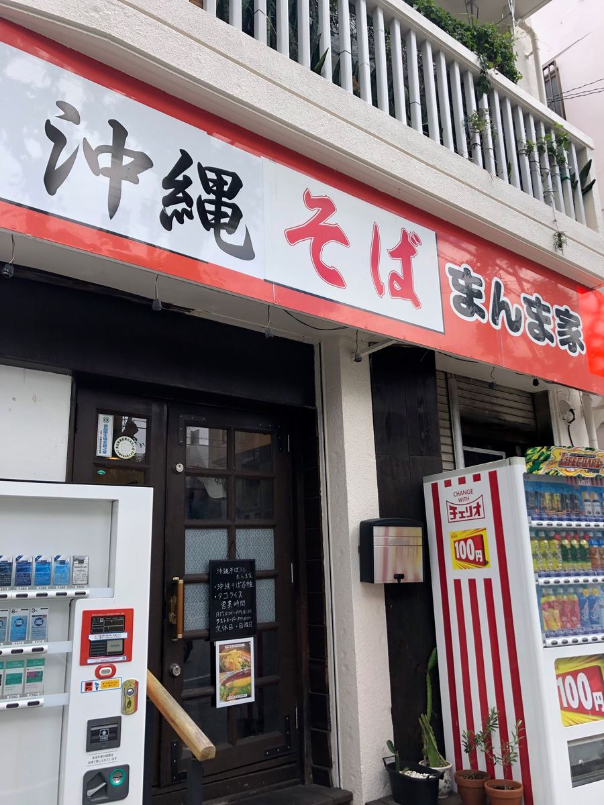
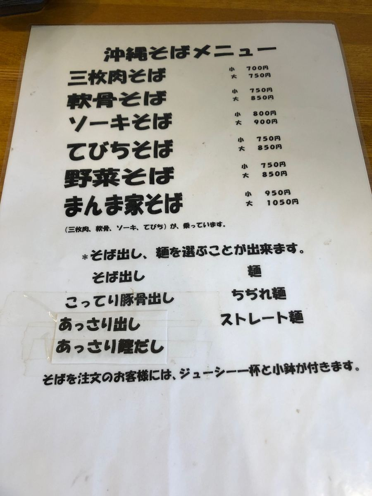
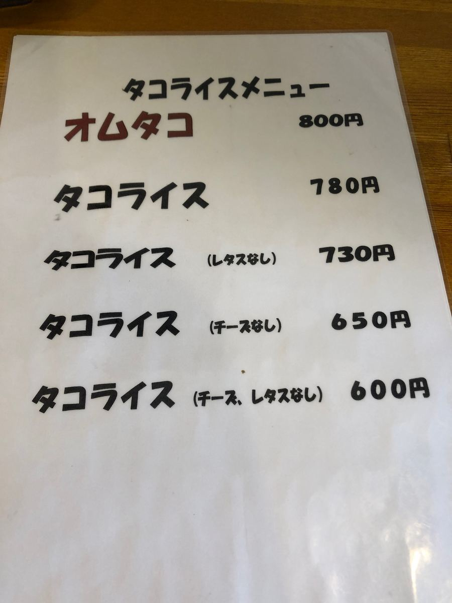
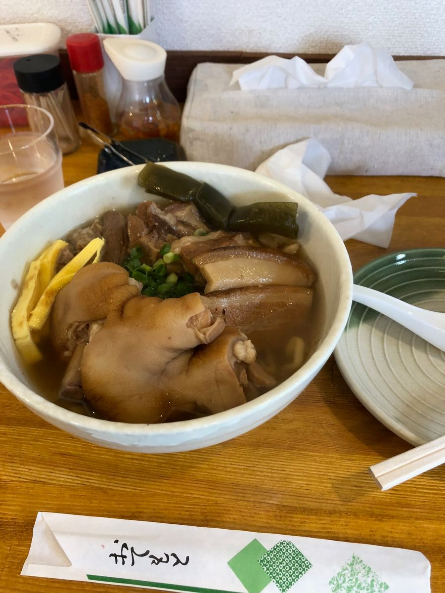
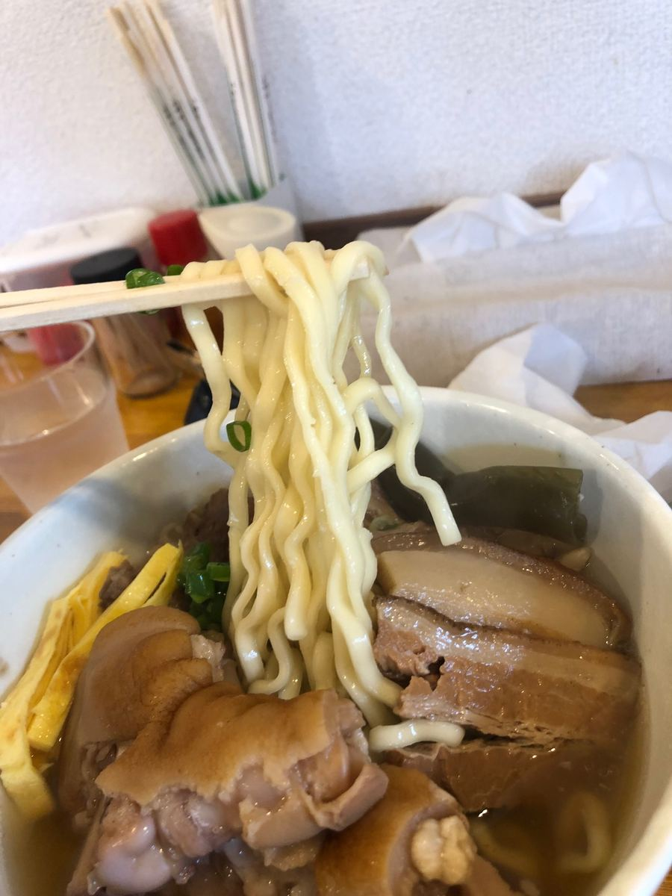
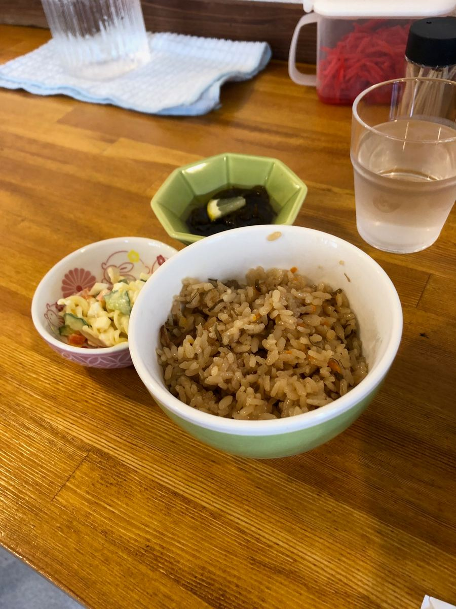

沖繩麵巡禮之旅，這次造訪了位在那霸市古島的「沖繩麵 滿滿家」🍜2025年6月吃的😄

位在古島街區、紅色看板很吸睛的店。店面是所謂街上沖繩麵店的感覺，不矯飾的氣氛反而讓人更期待😄 也因為是中午時段去的，店內擠滿了在地客人。能這麼受在地人喜愛，光這點就像是好吃的證明呢😊
那麼，我點的當然是以店名命名的招牌菜單「滿滿家麵」。這家店有趣的地方，是湯頭和麵條可以各自選擇。湯頭可從「濃郁豬骨高湯」「清爽高湯」「清爽柴魚高湯」三種選擇，麵條可從「捲麵」和「直麵」中選。

我猶豫了一下，這次湯頭選了「清爽柴魚高湯」，麵條則是店員告訴我「點的人很多喔」的「捲麵」。能這樣聽到推薦，也是在地店家才有的樂趣呢😋
順帶一提，菜單上還有塔可飯，備有不太像沖繩麵店的（笑）陣容喔。

然後上桌的就是這碗。豬腳、三層肉、軟骨排骨堆得滿滿的，份量相當十足的一碗✨

先從湯頭開始。雖然名字叫「清爽」，但喝起來柴魚高湯十足，與其說是清爽，更像是有鮮味的一碗。還算好吃😋 濃郁豬骨也很令人在意，不過這個柴魚高湯的平衡也相當不錯喔。
麵條選了捲麵。出乎意料，雖然這麼說有點失禮，但跟不矯飾的店面相比相當道地，Q彈的口感很有趣🍜 和湯頭也很融合，還算好吃。

配料有豬腳、三層肉、軟骨排骨，份量多到不行。不過軟骨排骨是喀滋喀滋口感的類型，喜歡軟嫩入口即化的我覺得有點不太對味^^; 軟骨排骨和三層肉都感覺得到相當的筋感。這部分可能會因人而異。
還有一件開心的事，點麵就會附沖繩炊飯和兩道小菜（水雲・通心粉沙拉）。

這次點了「大」，光是麵就已經份量十足，再加上沖繩炊飯和小菜，已經吃得好飽了😆 難怪有這種份量，在地客人絡繹不絕。唯一可惜的是沒有停車場。我是停在附近公園旁的馬路上，開車去的人可能需要找附近的投幣停車場🚗
評分（10分/15分）：清爽柴魚高湯是高湯十足、有鮮味的湯頭，捲麵比外表看起來更道地、Q彈。豬腳・三層肉・軟骨排骨份量滿分，附沖繩炊飯與小菜的滿足感也很充足。軟骨排骨喀滋喀滋的口感和沒有停車場可能會因人而異，但這是一碗讓人認同在地客人為何這麼熱鬧的麵😊
麵：★★★✬☆（3.5）
湯頭：★★★✬☆（3.5）
配料：★★★☆☆（3）